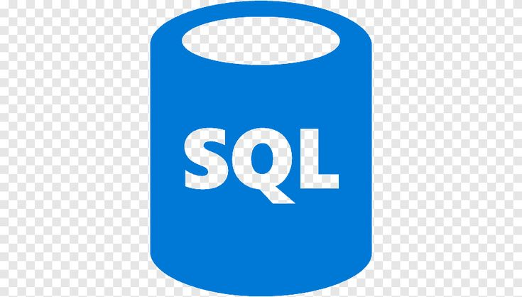
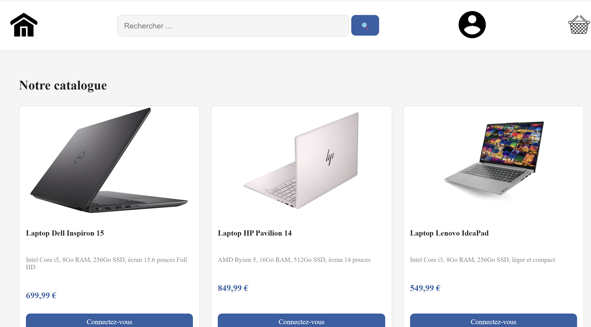
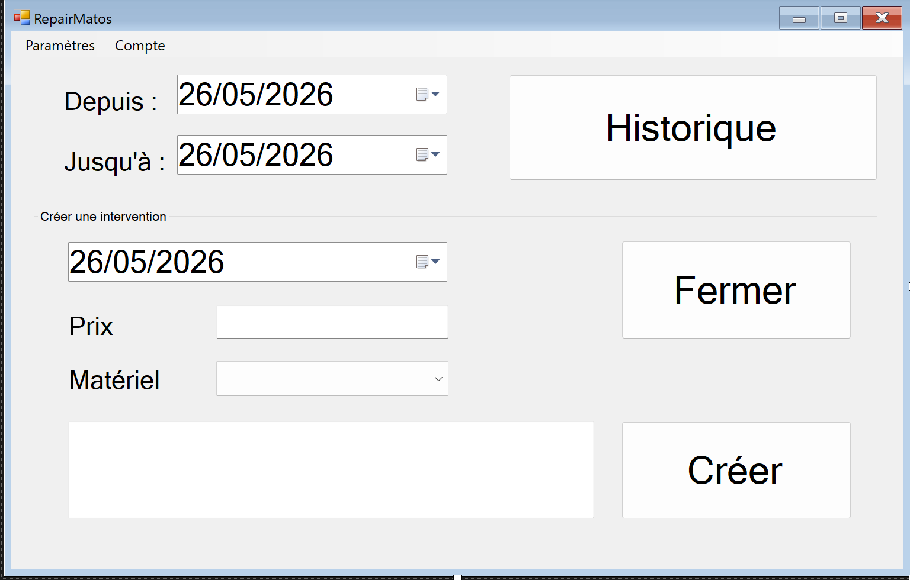

Compétences
- HTML
 CSS
CSS JavaScript
JavaScript PHP
PHP
SQL C#
C#
Étudiante en BTS Services Informatiques aux Organisations — Option SLAM
Voir mon CVBienvenue sur mon portfolio — Découvrez mes projets, compétences et expériences
Je m'appelle Tanassa Ibtihal, étudiante en BTS SIO option SLAM au lycée Aurlom à Paris. Passionnée par le développement logiciel et les nouvelles technologies, j'ai acquis des compétences en développement web et en développement d'applications au fil de mes projets scolaires et de mon alternance.
Mon alternance chez MNO Transport, en partenariat avec FIT Solutions, m'a permis de travailler sur un logiciel métier réel — le TMS — et de développer mes compétences techniques en conditions professionnelles.
Aurlom, Paris
Solutions Logicielles et Applications Métiers
Formation scientifique et technique
Obtenu au Maroc en 2021
MNO Transport est spécialisée dans la livraison express sécurisée, en partenariat avec FIT Solutions — certifiée ISO 9001 — pour des clients dans la défense, l'aéronautique et l'automobile.

Site e-commerce de vente de matériel informatique

Logiciel de gestion de matériel informatique en réparation
Technologie qui superpose des éléments numériques sur le monde réel. Utilisée dans le commerce, l'industrie, la santé et la défense. Marché en pleine explosion — 94 milliards $ en 2025, 511 milliards $ prévus en 2030.
CSS JavaScript PHP
SQL C#📧 Email : ibtihaltanass77@gmail.com
💼 LinkedIn : Mon profil LinkedIn